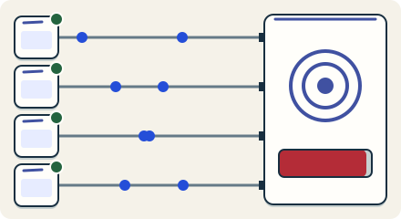

Work later · 3 minutes
Live sockets and presence
Chat and live scores keep a connection open; that changes how you count capacity.
Open this lesson
Open lines
Normal web requests ask and leave. A live feature, like chat, keeps a connection open so the server can push messages the moment they happen. A server can hold tens of thousands of open lines (approx.), but each one uses memory even when quiet.
Who is online
An open connection consumes memory. Presence is a separate, expiring observation, so a silent disconnect can briefly leave a person online.
Try the idea
Chat messages overwhelm the app servers. Add a websocket gateway to hold the connections.
Key numbers
- Open connections per gateway node
- ≈ 100,000. approx.
- Memory per connection
- ≈ 10 KB. approx.
- One million users online
- ≈ 10 nodes. 1,000,000 / 100,000, plus spare room (approx.)
Check your reasoning
Think through these questions before opening the lesson. In the game you can test the idea and compare your reasoning.
- Why is a live feature costly when users are quiet?
- Where should "online now" be stored?
- A gateway server restarts. What happens to its users?
The key point
Count open connections, not just requests, and keep presence light.
Practise this idea
- Hard
Live streaming
Streamers broadcast live and thousands watch together, with a chat on the side. Everyone wants the same piece of video at the same second, so nothing can be saved for later. When a big streamer goes live, the whole audience arrives at once.
- Medium
One-to-one chat
People send short messages to each other from their phones. A message must arrive once, in order, even when the phone is on a bad connection and sends it again. If the other person is offline, the message waits and a notification goes out.
- Hard
Group chat and presence
Teams talk in channels with many people. Everyone sees messages in the same order, sees who is online and who is typing, and gets notified when mentioned. At nine every morning thousands of workplaces start at once, and one announcement can reach a channel of tens of thousands.
- Medium
Telehealth video visits
Patients join a video visit with a doctor from their phone. Most calls go straight between the two people, but the platform runs the waiting room, chat, sign-in, the join link and a relay for the calls that cannot connect directly. A bad minute here means a patient staring at a spinner.